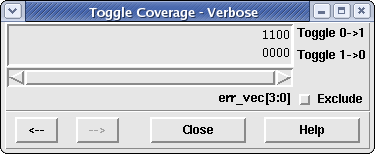

The verbose toggle window allows the user to see which bits for a given signal have toggled from a 0->1 or a 1->0 during simulation. Figure 1 shows a 4-bit signal called "value1" in which bit 0 has successfully toggled from a 0->1.
Figure 1. Verbose Toggle Window
The bit vector displayed is a binary bit vector, each value (0 or 1) represents whether that bit in the signal either toggled (1) or did not toggle (0) during simulation. There are two bit vectors displayed for the signal, the top vector shows the 0->1 toggle information while the bottom vector shows the 1->0 toggle information.
The name of the signal along with its MSB:LSB information is displayed at the bottom of the window; however, if the mouse cursor is placed over a specific bit in the toggle box, the MSB:LSB will be changed to show the displayed bit, making it easy for the user to discern exactly which bit has toggled/not toggled. If the width of the signal exceeds the given space for the toggle window, a scrollbar will be allowed to slide left and right to view the rest of the toggle information.
To exit this window, simply click on the window manager X button in the upper right-hand corner of the window.
If the Verbose Toggle Coverage window is currently displayed with a signal, the user may select a new signal in the Coverage File Viewer of the Main window. When a new signal is selected, its value immediately replaces the currently selecting signal value. This feature allows many different signals to be viewed one after the other without having to create/destroy a new window for each signal.